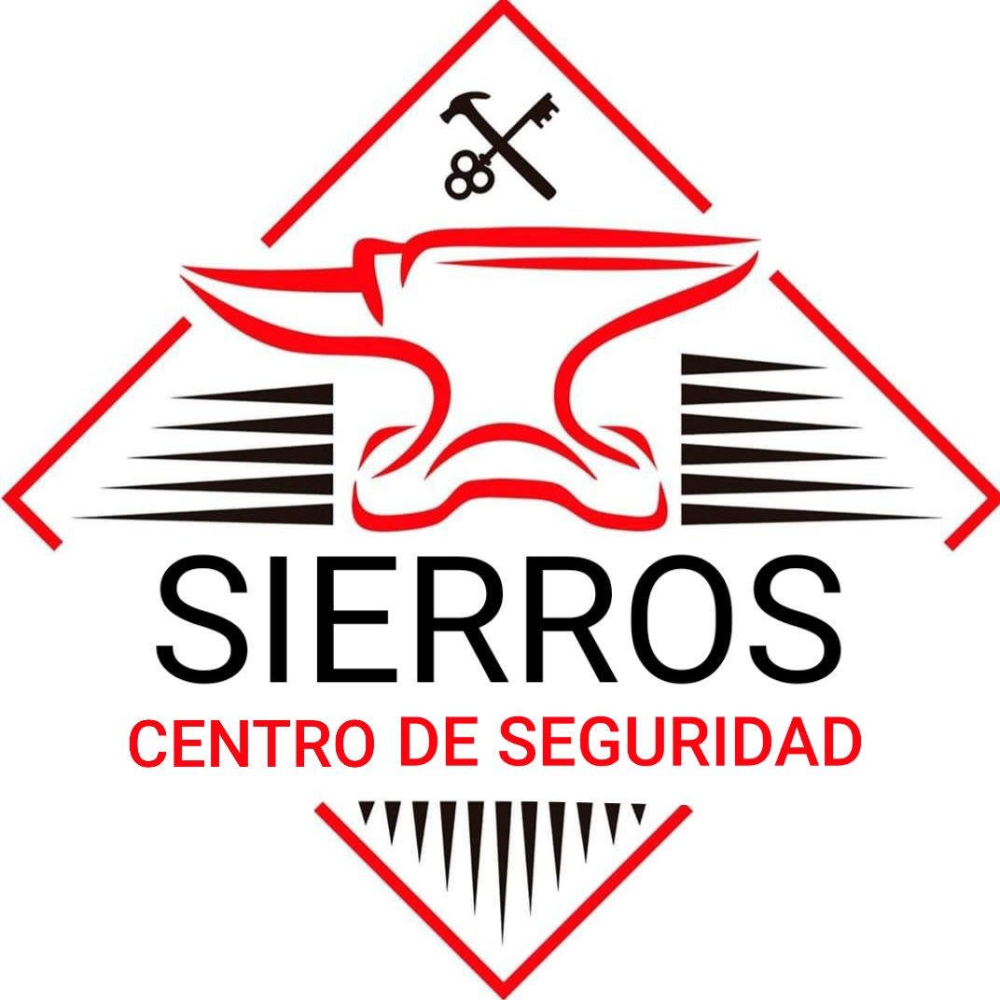
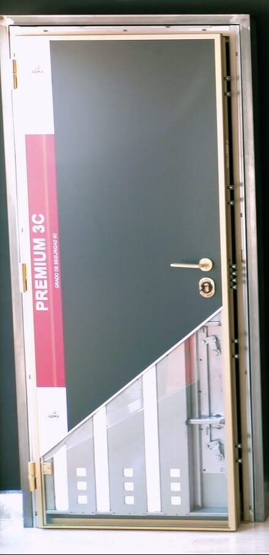
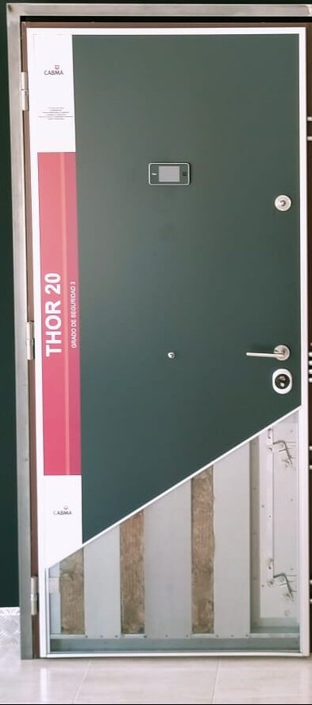
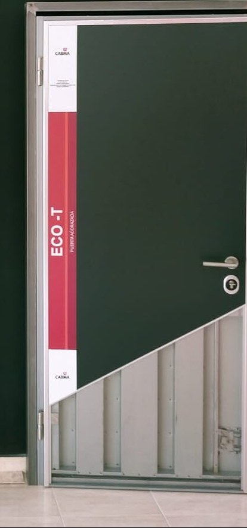
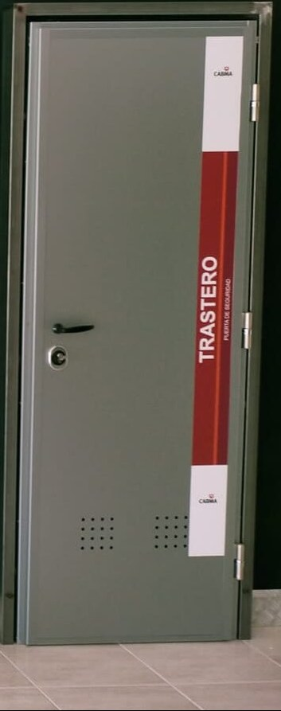

Puertas acorazadas
Venta y montaje de puertas acorazadas y blindadas CABMA, distribuidor oficial en Baleares. Personalizables en medidas y acabados.
Ver más
Distribuidor oficial en Baleares de puertas acorazadas CABMA. Cerrajero 24 horas, automatismos, alarmas y toldos. Un oficio de herrero y cerrajero al servicio de tu seguridad en toda Mallorca.

El Centro de Seguridad Sierros nace del oficio de Pedro Sierra, herrero y cerrajero desde 1999, tras pasar por las mejores metalúrgicas de la isla. Una empresa profesional y familiar que soluciona, aconseja y acompaña a cada cliente.
Somos distribuidor oficial en Baleares de las puertas acorazadas CABMA, totalmente personalizables en medidas y acabados, con paneles intercambiables. Nos desplazamos e instalamos en toda Mallorca.
Seguridad integral para tu hogar y tu negocio: desde la puerta acorazada hasta la apertura de urgencia, el automatismo o la alarma. Todo de la mano de un mismo profesional de confianza.
Venta y montaje de puertas acorazadas y blindadas CABMA, distribuidor oficial en Baleares. Personalizables en medidas y acabados.
Ver másAperturas de urgencia, cambio y reparación de cerraduras y bombines. Nos desplazamos a toda Mallorca a cualquier hora.
Ver másAutomatismos de accesos, toldos, alarmas de seguridad y reparación de accesos para viviendas y locales comerciales.
Ver másEmpresa profesional y familiar, 24 horas de servicio. Solucionan y aconsejan lo mejor a sus clientes.
Una gama completa de puertas acorazadas y blindadas, del nivel premium multipunto a la puerta de trastero. Acabados personalizables y paneles intercambiables.

Puerta acorazada de gama alta con cierre multipunto y acabado de madera personalizable.

Acorazada robusta con bombín de alta seguridad, ideal para vivienda y portales.

Solución acorazada de excelente relación seguridad-precio para el hogar.

Puerta de seguridad específica para trasteros, resistente y de fácil instalación.
Te acompañamos en cada paso para que elijas la solución de seguridad adecuada, con un trato cercano y profesional.
Estudiamos tu caso y te aconsejamos la mejor opción para tu hogar o negocio, sin compromiso.
Nos desplazamos, tomamos medidas y preparamos un presupuesto claro y a tu medida.
Instalamos con acabado profesional en toda Mallorca y respondemos siempre que nos necesites.
Empresa profesional y familiar, 24 horas de servicio. Solucionan y aconsejan lo mejor a sus clientes. Para mí, un 10.
Muy buenos profesionales y las mejores puertas acorazadas del mercado. Sin duda alguna lo volvería a llamar.
Muchas gracias al cerrajero, tardó poco en venir y poco en abrir. Un experto. Lo recomiendo.
Sí. Ofrecemos servicio de cerrajero 24 horas y nos desplazamos a toda Mallorca para aperturas de urgencia, cambios de cerradura y reparación de accesos.
Totalmente. Las puertas de seguridad CABMA son personalizables en medidas y acabados, con paneles intercambiables, para que se adapten a la estética que necesites.
Nuestro centro está en la C/ Ronda de l'Estació 17, Bajos, 07630 Campos. Nos desplazamos e instalamos en toda la isla de Mallorca.
Sí. Te asesoramos, tomamos medidas y preparamos un presupuesto a medida sin ningún compromiso. Llámanos al 660 22 39 59 o escríbenos por WhatsApp.
Trabajamos automatismos de accesos, toldos, alarmas de seguridad y reparación de accesos, tanto para hogar como para negocio.
Estamos en Campos, junto a la estación. Contacta con nosotros por teléfono, WhatsApp o email y te asesoramos sin compromiso.